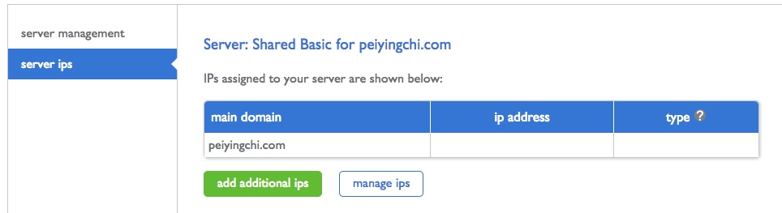
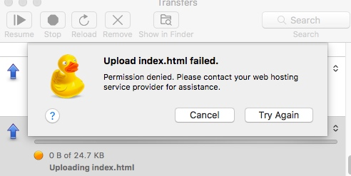

心路历程
- 之前在Bluehost上买了个域名
yingchi.com，就直接在它那里买了最基本的Web hosting服务，用的是LAPM stack(Linux, Apache, MySQL, and PHP)，花了半天找了个好看的个人主页模板，修修改改，填上经历技能就放那里没管了。 - 现在想添个博客上去，也督促自己把平时的笔记定时整理一下。
- 随便一查，发现我去，Bluehost的域名费不便宜啊。马上要续费了，大概 $15 USD一年，然后namecheap上是 $10一年。用GitHub的Student Pack还能白拿一年的
yingchi.me域名玩。所以就把域名迁移到了namecheap。 - 然后又查到Digital Ocean的Web hosting也更便宜，还可以随便安装系统，用VPS。而Bluehost上给的服务是Shared hosting。就买了DO的服务，先把
yingchi.me搞过去玩一玩。 - 想做到：
- 在namecheap管理域名
- 在DO host
yingchi.com并把个人资料页面放在这里 - 在
blog.yingchi.com放基于Hexo平台的个人博客
基于现实的计划
- 因为在Bluehost的Web hosting服务还有一年(为什么要买这么久。。。), 所以
yingchi.com的hosting先不动 - 用
yingchi.me这个域名，在DO实现个人主页和博客的搭建 （这是个工程比较大的一步） - 把
yingchi.com域名host到DO，并第二步迁移到yingchi.com
在DO实现个人主页和博客的搭建
- 个人主页计划放在
yingchi.me用普通HTML页面实现。博客放在blog.yingchi.me, 用Hexo实现 - 在本地搭建完成个人主页（先用原来的）和个人博客。Complete the development for the personal homepage and also the blog locally。流水账和踩坑过程记录在：
- 把这两套站点的文件部署到DO上。流水账和踩坑过程记录在：
心路历程3.的具体过程
When I log in to my cPanel, under ‘performance’ tab, there is no ‘manage access’ option.

It seems that I do not have a dedicated IP address.
However, after looking up the charges for VPS or dedicated IP, it was around $20 per month. I don’t want to invest so much for now. So let’s try some other approachs:
- host my blog subdomain
blog.peiyingchi.comon GitHub Pages. This option is free - move my hosting service from bluehost to another server provider completely. E.g. Digital Ocean, where they provides VPS server at $4 per month.
如果不想麻烦学习VPS还有花钱去买这些服务，而且只是想简单的搭建一个Blog的话可以用第一种渠道。
这个渠道搭建Hexo blog已经有很多网上教程可以跟着学。下面是一个比较全面的：
http://blog.fens.me/hexo-blog-github/
经过纠结😖，我没有用github作为服务器，最终选了第二种方，去买了DO的基本版的ubuntu server。
心路历程4.的具体过程
这里我选了Digital Ocean, 从GitHub的Student pack里面可以拿到$50的promotion.
Create a new DigitalOcean Droplets with Ubentu 16.04.2 x64.
Select the $5/mo package.
Add SSH keys.
On what is SSH keys and how to add one, refer to this How To Use SSH Keys with DigitalOcean Droplets
不想在这里add shh keys直接点create。 会有邮件给你root的地址和密码，有另一封邮件告诉你怎么做一些简单的server setup。一步步跟着来就好。
Step 1: The Must-Haves
- Review the Ubuntu 14.04 server checklist which covers:
- Initial Ubuntu server setup tutorial with step-by-step configuration instructions, and
Connecting to your Droplet with SSH. - Use DigitalOcean’s DNS to set up your hostname from the Control Panel.
- Initial Ubuntu server setup tutorial with step-by-step configuration instructions, and
Step 2: Web Servers
- Install the powerful Nginx web server on Ubuntu.
- Use Nginx virtual hosts to serve multiple sites on one server.
在设置Domain的过程中可能会碰到下面这些名词：
A记录
A记录是用来指定主机名（或域名）对应的IP地址记录。用户可以将该域名下的网站服务器指向到自己的web server上。同时也可以设置您域名的二级域名。
CNAME记录
CNAME记录，即：别名记录。这种记录允许您将多个名字映射到同一台计算机。 通常用于同时提供WWW和MAIL服务的计算机。例如，有一台计算机名为“host.mydomain.com”（A记录）。 它同时提供WWW和MAIL服务，为了便于用户访问服务。可以为该计算机设置两个别名（CNAME）：WWW和MAIL。
Install LEMP stack
Follow this tutorial:
How To Install Linux, Nginx, MySQL, PHP (LEMP stack) in Ubuntu 16.04
Error installing mysql?（安装Mysql出现错误?)
Uninstall mysql completely (按照以下的教程完全卸载Mysql再重新安装):
Uninstall MySQL from Ubuntu 16.04
Uninstall MySQL completely
Set Up Nginx Server Blocks (Virtual Hosts) on Ubuntu 16.04
Follow this tutorial:
How To Set Up Nginx Server Blocks (Virtual Hosts) on Ubuntu 16.04
Step One: Set Up New Document Root Directories
By default, Nginx on Ubuntu 16.04 has one server block enabled by default. It is configured to serve documents out of a directory at /var/www/html
We will create a directory structure within /var/www for each of our sites. The actual web content will be placed in an html directory within these site-specific directories. This gives us some additional flexibility to create other directories associated with our sites as siblings to the html directory if necessary.
|
|
We can use the $USER environmental variable to assign ownership to the account that we are currently signed in on (make sure you’re not logged in as root). This will allow us to easily create or edit the content in this directory:
|
|
Step 2: upload your website files to your domains
You can simple create a dummy index.html page if you just want to test.
Otherwise, you can upload your files using SFTP or other file transfer methods.
Step 3: Create server block files for each domain
we will create our first server block config file by copying over the default file:
|
|
Edit the file, and make it looks like the following:
|
|
Do the same for the 2nd domain.
Step 4: Enable your Server Blocks and Restart Nginx
Now that we have our server block files, we need to enable them. We can do this by creating symbolic links from these files to the sites-enabled directory, which Nginx reads from during startup.
We can create these links by typing:
|
|
What is symbolic link?
A symbolic link, also termed a soft link, is a special kind of file that points to another file, much ==like a shortcut in Windows or a Macintosh alias==. Unlike a hard link, a symbolic link does not contain the data in the target file. It simply points to another entry somewhere in the file system. This difference gives symbolic links certain qualities that hard links do not have, such as the ability to link to directories, or to files on remote computers networked through NFS. Also, when you delete a target file, symbolic links to that file become unusable, whereas hard links preserve the contents of the file.
To create a symbolic link in Unix/Linux, at the Unix prompt, enter:
Replace
source_filewith the name of the existing file for which you want to create the symbolic link (this file can be any existing file or directory across the file systems). Replacemyfilewith the name of the symbolic link. Thelncommand then creates the symbolic link. After you’ve made the symbolic link, you can perform an operation on or executemyfile, just as you could with thesource_file. You can use normal file management commands (e.g.,cp,rm) on the symbolic link.
Transfer files Local <==> Remote Server using SFTP
Follow this tutorial if it’s your first time using SFTP:
How To Use SFTP to Securely Transfer Files with a Remote Server
You can also set up SFTP on Cyberduck by providing your server IP, username and password. Put port number as 22.
I encountered the following error when trying to upload files through SFTP.

I then tried to upload files from terminal (log in by sftp yingchi@xx.xx.xx.xx) and I got
|
|
So it seems that I did not set the permission for the folder correctly.
After some search, here is the solution:
1. add user “yingchi” to group “www-data” (below replace yingchi with your username):
|
|
2. set permissions for user group www-data
Here, because I want to upload my files to /var/www/yingchi.me/...
and also /var/www/blog.yingchi.me/..., so I opened the permission for /var/www. If you just have one domain, and the files are under /var/www/html, you can modify the path and only open permission for that folder.
|
|